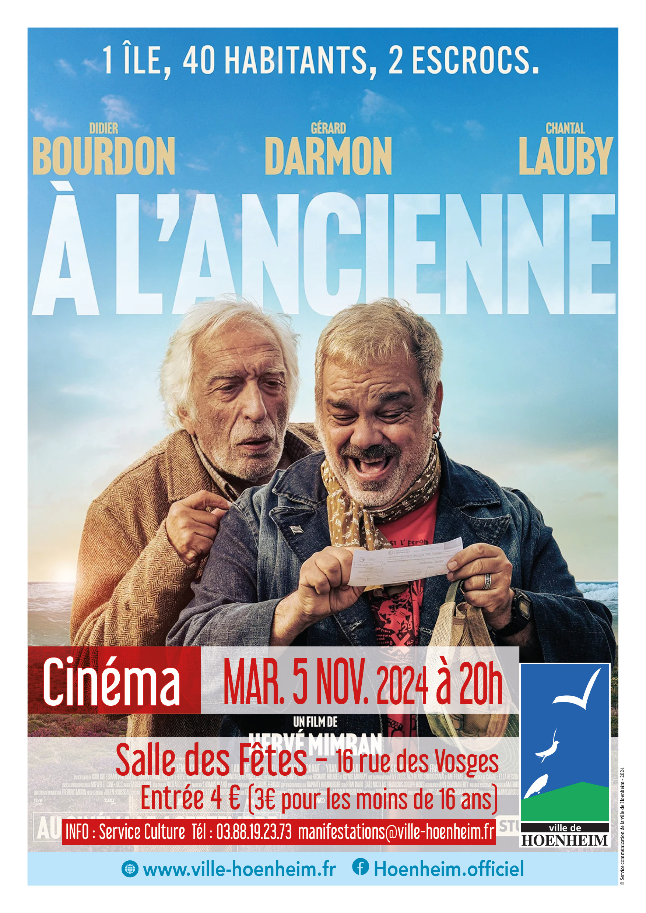

- Cet événement est terminé
Cinéma : A l’ancienne
5 novembre 2024 à 20 h 00 min - 21 h 30 min
Navigation de l'événement

La ville de Hoenheim vous invite à une séance de cinéma le mardi 5 novembre 2024 à 20H à la salle des fêtes.
Plein tarif : 4 Euros / Tarif réduit (moins de 16 ans) : 3 Euros
Le film « A l’ancienne » est pour tout public.
Cette comédie dure 1h 30min.
Deux amis de toujours vivent sur une petite ile de Bretagne et découvrent que l’un des habitants a gagné le gros lot à la loterie nationale. Les deux vieilles canailles se mettent alors à la recherche du mystérieux gagnant afin de s’assurer ses faveurs avant que la nouvelle ne se répande. Mais lorsqu’ils découvrent que ce dernier est mort, ticket gagnant en main, ils décident d’organiser avec la complicité de tout le village une grande arnaque au loto pour prendre sa place.